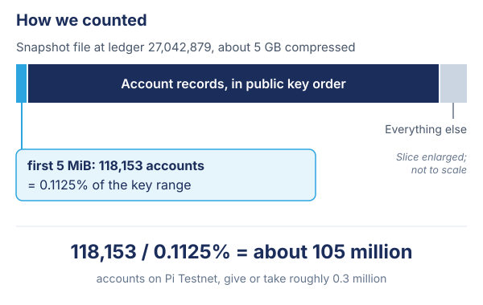
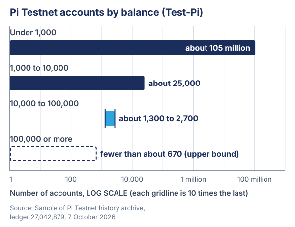

Pi Logistics blog
105 million wallets: what Pi Testnet's ledger tells us
Pi Testnet's ledger holds about 105 million accounts. We counted them on 7 October 2026, from the network's public history archive. The number is worth sitting with, not because it proves anything about Pi's future, but because of the questions it forces us to ask.
How we counted
Pi's blockchain, like the Stellar network it builds on, regularly publishes a snapshot of its entire ledger to a public history archive. Anyone can read it. The snapshot we used, at ledger 27,042,879, is about 5 GB compressed, and almost all of that is account records.
Downloading 5 GB over a mobile connection in Accra was not an option, so we used a property of the format instead. Account records are stored in order of their public key, and they come before everything else. Public keys are effectively random, so the first slice of accounts is a fair random sample of all of them.

The first 118,153 accounts covered 0.1125% of the possible key range. Dividing one by the other gives about 105 million accounts, with a statistical margin of roughly 0.3 million either way. A larger read of 472,805 accounts gave us the balance picture further down. The whole exercise used about 25 MB of data, and it never touched the network's live API servers.
What 105 million is, and what it is not
An account is not a person. Some of these accounts belong to Pioneers who opened a testnet wallet to try an app. Others were made by developers testing their code, by scripts, and by bots. One person can hold many; many accounts are never used again after the day they were created.
So 105 million is not a count of users, and it is certainly not a measure of wealth: Test-Pi has no monetary value. What it does measure is something easier to overlook. It is a record of how many times, and by how many hands, this network has been touched.
It also says something about the ledger itself. A system carrying 105 million accounts still closes a new ledger every few seconds. Whatever else one thinks about Pi, that is an engineering fact, and it was checked here rather than taken on trust.
The shape of the ledger
Almost every account holds very little: 99.97% hold under 1,000 Test-Pi. Scaled up from our sample of 472,805 accounts, the picture looks like this:

| Balance (Test-Pi) | Estimated accounts on Pi Testnet |
|---|---|
| Under 1,000 | about 105 million (99.97%) |
| 1,000 to 10,000 | about 25,000 |
| 10,000 to 100,000 | about 1,300 to 2,700 |
| 100,000 or more | fewer than about 670 |
The last two rows rest on small numbers: 6 accounts in the 10,000 to 100,000 band, and none at all at 100,000 or more. That is why the bottom row is a ceiling (a 95% upper bound) rather than an estimate. A full read of every account would sharpen them; it would also cost the full 5 GB.
This is a long, thin tail. A very wide base of accounts holding almost nothing, a few tens of thousands holding a little, and a top band so sparse that half a million random accounts did not include a single member of it.
A disclosure
Our own testnet trading bot, pi-pulse, held about 130,847 Test-Pi on the day we counted. That puts it in the top band, among fewer than about 670 accounts out of 105 million.
It started with about 10,000 Test-Pi. It got the rest by doing one dull thing around the clock: finding testnet liquidity pools whose prices disagreed, and trading between them until they agreed again.
We mention it because it makes a point better than any argument could. Rising into the top 0.0006% of a 105-million-account ledger, with automated code and no real money, does not describe wealth. It describes how thin and mispriced testnet markets are. That is exactly what a testnet is for, and it is worth remembering whenever anyone quotes a testnet number as if it described the real thing.
Three questions the number raises
1. Who carries the weight? Every node that validates the network keeps the full current state. On testnet, the account records alone come to about 4.7 GB compressed, before trustlines, offers and pools. Each new account makes every node slightly heavier for as long as it exists. That is the quiet cost of a large ledger: the bigger it grows, the more it takes to run a node, and the fewer people can. If mainnet grows the way testnet has, how will state size be kept within reach of the ordinary node operators the network depends on?
2. What should we count? Accounts are cheap to create and easy to quote. Activity is harder to fake: transactions that do something, apps people return to, liquidity that can absorb a real trade. Our own monitor tracks 1,523 liquidity pools on Pi Testnet, and most of the 105 million accounts hold dust and never move. The more useful questions are how many accounts are active, how often, and doing what. A headline number without a method behind it should earn polite scepticism, including ours.
3. What does the shape predict? A ledger with a wide base and a very thin top behaves in a particular way once real value is at stake. Prices are set by the few with depth, and the many feel every swing. Testnet balances do not predict mainnet balances, but testnet is where the mechanics of markets, pools and bots get rehearsed. If the rehearsal shows thin markets that a single bot can move, that is a lesson about liquidity worth learning before it costs anyone anything.
What Pioneers can do with this
The most important thing about this number is not its size. It is that anyone could check it. The archive is public, the method fits in a paragraph, and the data cost less than a short video.
That is the habit worth building now, while the stakes are still Test-Pi:
- Ask for the method. When someone quotes a figure about Pi, ask how it was measured and whether you could repeat it.
- Count activity, not just accounts. Sign-ups flatter; use tells the truth.
- Use the testnet for what it is for. Build, test and break things there, and watch what thin markets do, so that the mainnet versions are better.
A hundred and five million accounts is a large number. What it becomes depends on what is built on it, and on whether the people building keep asking for evidence. The ledger is open. Read it.
Figures are estimates from a sample of Pi Testnet's public history archive at ledger 27,042,879 (7 October 2026). Test-Pi has no monetary value. Nothing here is financial advice.